Это поточный алгоритм с переменной длиной ключа разработан в 1987 году Рональдом Ривестом, сотрудником RSA-Security, для его легального использования требуется лицензия. Алгоритм RC4 в течении 7 лет был секретным, с 1994 года был анонимно опубликован в интернете и стал доступен для изучения. Работает примерно в 10 раз быстрее DES. Он состоит из следующих операций.
Инициализация блока замены размерности 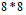 байт 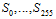. Сначала заполняется линейно 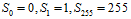. Затем заполняется еще один такой же массив Κ ключом, причем ключ циклически повторяется требуемое количество раз для заполнения всего массива. Это означает, что ключ может иметь размер от 16 до 256 байт.
После этого выполняются следующие действия:
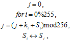
где операция 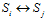 означает перестановку местами байтов 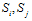.
Шифрование выполняется побайтно, согласно следующему алгоритму:
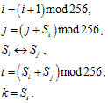
Первоначально i, j=0.
Затем байт k складывается по модулю 2 с байтом открытого текста.
Этот алгоритм очень удобен как для программной, так и для аппаратной реализации. Возможна реализация этого алгоритма для блока замены размера 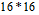 и длиной слова 16 бит. При этом существенно возрастет время инициализации, потребуется 128 кбайт памяти, но вдвое уменьшится время шифрования.
Данный алгоритм может быть легко взломан, если используются неслучайные или зависимые ключи, или один ключевой поток используется дважды.
В 2001 году Флурер, Мантин и Шамир опубликовали работу об уязвимости ключевого расписания RC4. Они показали, что среди всех возможных ключей, первые несколько байт ключевого потока являются совсем неслучайными. Из этих байт можно с высокой вероятностью получить информацию о используемом шифром ключе. И если входной ключ просто конкатенируются (соединяются) для создания ключа шифра RC4, то этот долговременный ключ может быть получен с помощью анализа достаточно большого количества сообщений, зашифрованных с использованием данного ключа. Эта уязвимость, и некоторые связанные с ней эффекты, были использованы при взломе шифрования WEP в беспроводных сетях стандарта IEEE 802.11. Это показало необходимость скорейшей замены WEP, что повлекло за собой разработку нового стандарта безопасности беспроводных сетей WPA.
Поточный шифр Snow 3GPP является словоориентированным синхронным поточным шифром, в котором слово имеет размер 32 бита. Шифр основан на идее суммирующего генератора. Шифр имеет длину ключа 128 бит и начальный вектор IV длиной 128 бит. Схема поточного шифра представлена на рис. 4.36.
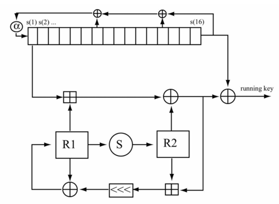 |
Рис. 4.36. Схема работы шифра Snow 3GPP |
Поточный шифр Snow 3GPP состоит из двух модулей, регистра сдвига с линейно обратной связью и конечного автомата (finite state mashine, FSM). Регистр сдвига состоит из 16 элементов по 32 бита. Обратная связь в нем определена через ненулевые коэффициенты неприводимого полинома над расширенным полем 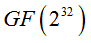. Конечный автомат состоит из трех регистров R1,R2,R3 по 32 бита, и использует две подстановки 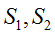. Также используются смешивающие операции − сложение по модулю 2 и сложение по модулю 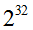.
Данный алгоритм использует следующие операции:
1. MULx отображает 16 бит в 8; пусть V и c 8-битные значения, тогда
− если старший значащий бит V равен 1 : 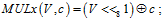
− если старший значащий бит V равен 0 : 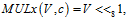 где << побитовый сдвиг влево.
2. Операция MULxPOW отображает 16 бит и положительное целое i в 8 бит. 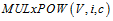 определена рекурсивно:
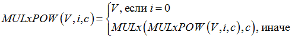.
3. Ma отображает 8 бит в 32 бита: 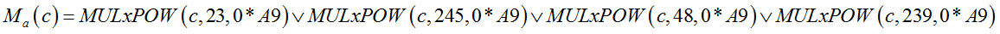, используется как 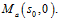
4. Da отображает 8 бит в 32 бита: 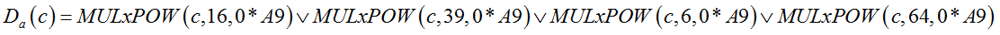.
5. Подстановки 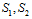:
− 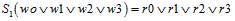 используется как 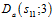
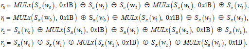
Здесь: SR – подстановка алгоритма AES.
− 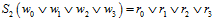 определена как
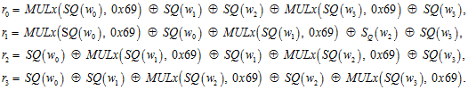
Здесь: SQ – подстановка алгоритма Snow.